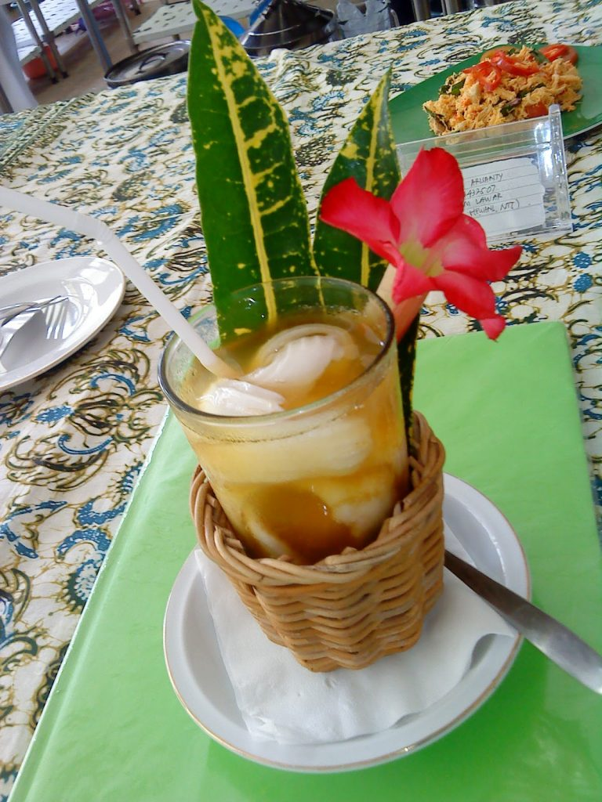

Es Tambring

Pulau yang terkenal dengan wisatanya yaitu pulau bali memiliki berbagai macam makanan dan minuman khas yang sangat terkenal misalnya minuman es tambring. Minuman khas pulau dewata ini sangat cukup unik sekali karena bahan yang digunakan dalam pembuatan es tambring bukan hanya menggunakan air kelapa dan asam saja tetapi yang cukup unik dari minuman es tambring ini adalah menggunakan bahan putih telur ayam kampung. Cukup unik sekali, minuman es tambring juga selain menggunakan air kelapa sebagai bahannya juga bahan daging kelapa muda yang dikerok melengkapi sajian es tambring ini.
Yaitu terdapat dari buah apelnya serta dari kandungan vitamin dari jusnya tersebut, bisa anda sajikan sajian minuman segar ini dengan tambahan cemilan yang anda sukai. Memang sajian ini sudah tersedia ditempat cafe yang menyediakan sajian minuman yang segar ini, namun jika anda sedang malas untuk bepergian alangkah baiknya jika anda buat sendiri dirumah dengan cara yang praktis.
Cara membuat: